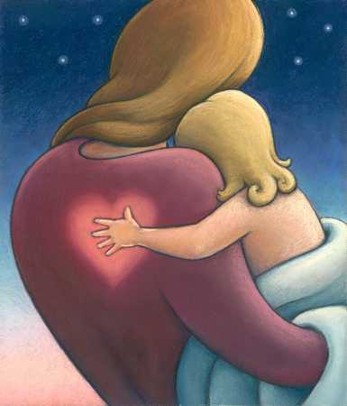
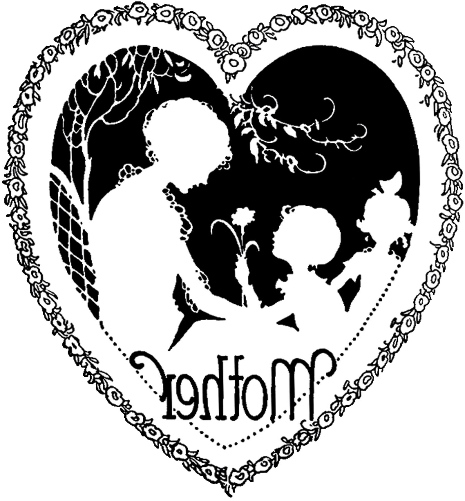

A Letter to my mom
by Mark Early
Dear Mom,
I’ve pondered on what to give you for your birthday. I’ve never been a good gift-giver so this has been a challenge for me. After giving it some thought, I decided probably the best thing I could do would be to give you my thanks and appreciation for helping me find my way in this world. That’s something I don’t think I’ve done well enough over the years.
So here goes.
Thank you for always being there in my life and always looking out for me. You always made me feel special and encouraged me all along the way. I know these are things that parents are supposed to do for their children, but I don’t think anyone else could have done it any better.
Some folks would say we didn’t have very much back in those days. I say they’re wrong. Thanks to you and Dad, we always had more than plenty. Plenty of safety, security, food, shelter, and love. All those things that growing kids need. Most importantly, I always felt like I had plenty of space to grow and space to rest. It’s hard sometimes to grow up on a farm and realize that your mind is always somewhere else. You seemed to appreciate that and overlooked my meandering and wandering, while always welcoming me back whenever I returned from whatever far off worlds I’d discovered or invented.
I’ve never thanked you for doing so many chores and so much hard work that truly I should have gotten up to do on every school morning from about the fourth grade on. I should have been the one bundling up to go milk or feed the hogs or whatever else needed doing on those cold winter mornings. Looking back, I know now that it never occurred to me that the stuff I did in the evenings also had to be done in the mornings and you were the one doing it. For that, I’m sorrier than I can tell you.
I appreciate how you always worked so hard to show your love for us in the most selfless ways. Now that I have several years of experience in the kitchen, I understand what went into those huge breakfasts you’d make from time to time. Breakfast was always good, but to wake up to a platter of fried chicken along with gravy and biscuits – that was heaven. And a ton of work for you, cooking AND cleaning. I appreciate that now I find that trait has rubbed off on me. I like to cook for those I love. It means a lot to give someone something of yourself. What better way than through feeding them, body and soul.
Feed me, you did. You always made sure I did my schoolwork. You also had no problem helping me get my hands on most anything I wanted to read. Another marvelous inheritance I have from you is that I can’t get through a day without reading something, without visiting one of those far off worlds you never tried to keep me from. Thank you for a gift that I could never replace and a gift that I would never be the same without.
Thank you for the laundry, the housekeeping, the care when I was sick, the special treats on special occasions or no occasion at all.
Thank you for giving me advice when I needed it and space when I needed that as well.
I don’t think I asked for a lot of ‘things’ when I was growing up. I like to think I was pretty ‘low maintenance.’ I do remember, however, those times when I would ask for a little money to go to a movie, or bowling, or whatever, you would gladly pull some out. Again, it never occurred to me that in that moment you were probably giving up something you really wanted or needed for yourself just so I could have something I wanted. I see that now.
Really, what it all boils down to is that you were, and are, the most magnificent mom I could have asked for. Beautiful, smart, devoted, funny, caring, and everything else any son could want, all wrapped up in a flannel housecoat and a smile. You are seldom far from my thoughts and never out of my heart. I wanted to write these words on paper so that you could always have them close at hand, especially when I’m far away and don’t call as often as I should. I want you to always know that I love you and cherish you more than life itself. Whenever I cook a meal, read a book, or just feel the sunshine on my face, I am feeling you and the love you always showed me.
I hope and pray you feel the same.
Love ever and always.